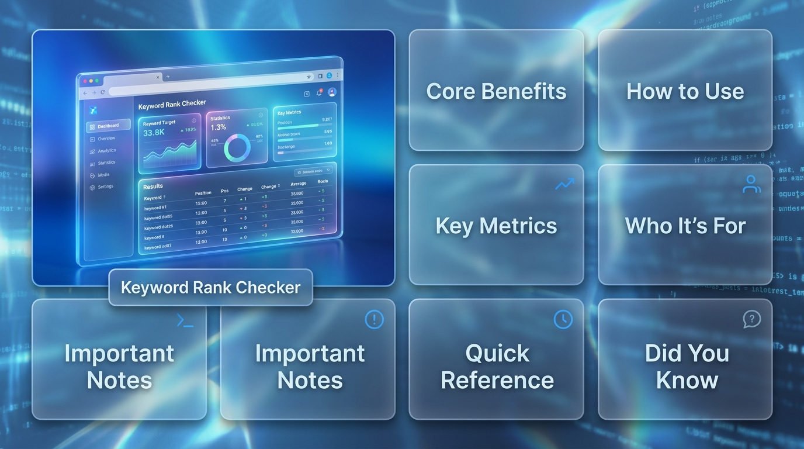
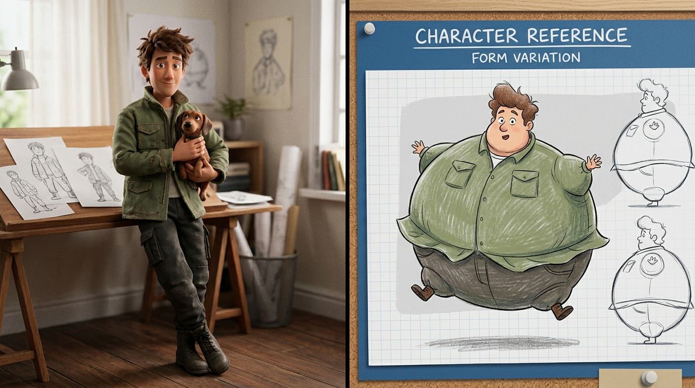
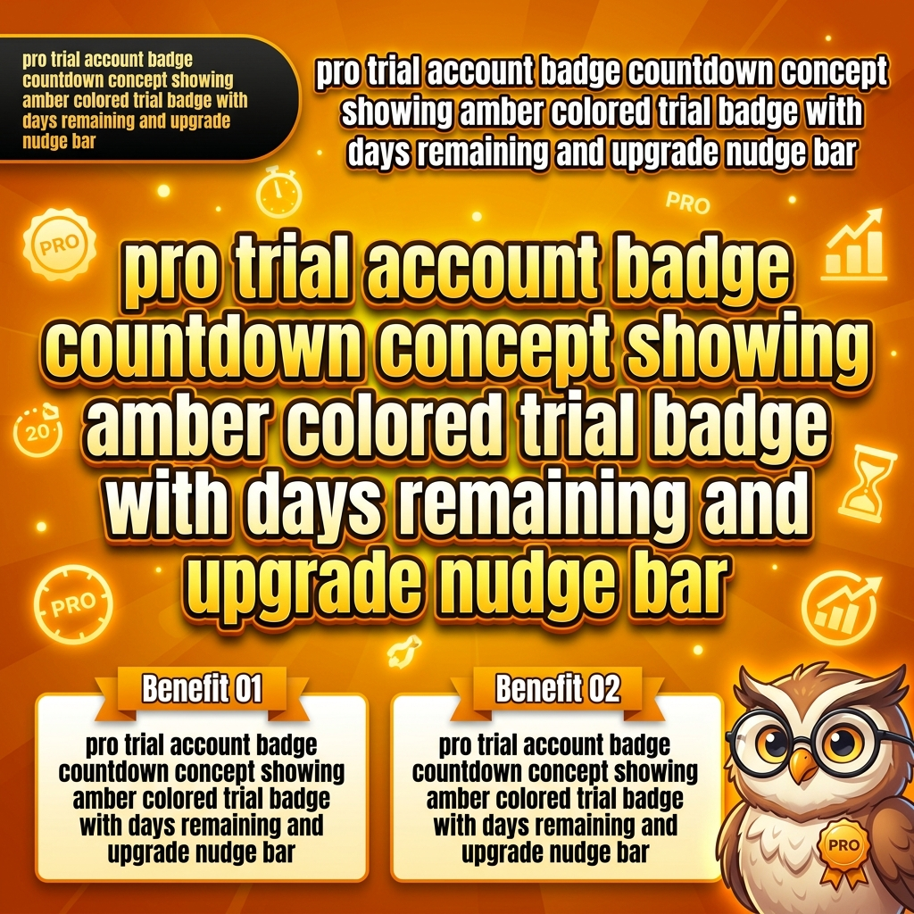

Công cụ theo dõi thứ hạng từ khóa trên Google. Đơn giản, chính xác, mạnh mẽ.
v1.1.0 — Đã phát hànhchrome://extensions/Cho phép extension tự động theo dõi kết quả tìm kiếm thủ công mà không dùng dữ liệu cached, đảm bảo kết quả chính xác nhất.

Giao diện chính với thiết kế Hologram/Neon Glass hiện đại
example.com, shop.vn). Mỗi dòng một tên miền. Extension dùng logic "First-Match" — nếu bất kỳ tên miền nào xếp hạng, sẽ ghi nhận vị trí cao nhất.Total, Found, Not Found, hoặc CaptchaRe-check Failed để thử lại từ khóa lỗi, hoặc Export để lưu dữ liệu
Ba chế độ thực thi: Sequential, Batch, Pipeline
Kiểm tra từ khóa lần lượt từng cái trong một tab nền. Ít khả năng bị Google chặn, phù hợp với người dùng Free.
Kiểm tra nhiều từ khóa cùng lúc bằng cách mở nhiều tabs (tối đa 25 tabs song song). Tăng tốc độ nhưng có thể gặp CAPTCHA.
Quy trình tự động hoàn toàn tích hợp CapSolver. Kiểm tra từ khóa và tự động giải CAPTCHA Google mà không cần can thiệp thủ công.
Mô phỏng thiết bị: Desktop, Mobile (iOS/Android), Tablet
google.com.vn, google.co.uk) và ngôn ngữ tìm kiếmExtension hoạt động tốt nhất và nhanh nhất khi kiểm tra thứ hạng trong Top 10 hoặc Top 20. Nếu domain của bạn xuất hiện ở trang 1 hoặc 2, chỉ mất vài giây mỗi từ khóa.
Nếu đặt Search Depth là 100, extension có thể phải duyệt qua 10 trang Google nếu domain không được tìm thấy sớm.
Tính năng độc đáo của extension này là Background Auto-Tracking:
Chú ý: Đảm bảo đã bật "Allow in Incognito" trong Chrome Extension settings để tính năng này hoạt động.
Google bảo vệ search engine khỏi các truy vấn tự động. Dưới đây là cách Rank Checker xử lý:
ipv4.google.com/sorry), extension tự động phát hiện và tạm dừng hàng đợiTruy cập dashboard bằng cách click Chart Icon 📊 ở góc trên bên phải của extension header.
| Tính năng | Free | Pro Trial (30 ngày) | Pro |
|---|---|---|---|
| Keyword Quota | 10 / ngày | Không giới hạn | Không giới hạn |
| Chế độ kiểm tra | Sequential | Sequential, Batch, Pipeline | Sequential, Batch, Pipeline |
| Mô phỏng thiết bị | Desktop | Desktop, Mobile, Tablet | Desktop, Mobile, Tablet |
| Domains | Giới hạn | Không giới hạn | Không giới hạn |
| Lịch sử & Export | Full Access | Full Access | Full Access |
| Giá | Miễn phí | Miễn phí | 90,000₫/tháng 800,000₫/năm |

Tài khoản mới tự động nhận 30 ngày Pro Trial sau khi xác minh email
Tài khoản mới đăng ký sẽ tự động nhận 30 ngày Pro hoàn toàn miễn phí ngay sau khi xác minh email.
Thanh toán qua VietQR — chuyển khoản ngân hàng Việt Nam
Khi hết trial, nâng cấp lên Pro bằng cách quét mã QR với ứng dụng ngân hàng. Thanh toán tự động kích hoạt khi nhận được tiền.
Click nút "Upgrade" bên trong extension → quét mã QR → chuyển khoản. Đăng ký thành công tức thì.
Không! Tài khoản mới được 30 ngày Pro miễn phí ngay sau khi xác minh email. Bạn có thể dùng mọi tính năng Pro trong thời gian trial. Khi hết trial, có thể nâng cấp hoặc tiếp tục dùng gói Free.
Bạn sẽ thấy thông báo khi 30 ngày trial kết thúc. Có thể nâng cấp Pro qua VietQR (chuyển khoản ngân hàng) để tiếp tục. Nếu không nâng cấp, sẽ chuyển về gói Free (chỉ Sequential mode, 10 từ khóa/ngày).
Badge "TRIAL · 7d" hiển thị số ngày còn lại trong trial miễn phí. Khi còn ≤7 ngày, một thanh nhắc nhở sẽ xuất hiện để khuyến khích bạn nâng cấp Pro.
Mỗi tài khoản giới hạn 2 phiên hoạt động đồng thời. Hãy đăng xuất khỏi thiết bị khác, sau đó thử đăng nhập lại. Có thể quản lý các phiên từ menu dropdown người dùng.
Kiểm tra cài đặt "Search Depth". Nếu đặt ở Top 20, extension sẽ dừng tìm kiếm ở vị trí 20 và trả về "Not Found". Đổi depth lên Top 50 hoặc Top 100 và kiểm tra lại.
Điều này xảy ra khi Chrome cho background tab ngủ. Click STOP rồi nhấn START lại. Hoặc refresh extension.
Auto-tracking chỉ ghi nhận tìm kiếm trong Incognito Mode (để tránh personalized data làm sai lệch metrics). Đảm bảo "Allow in Incognito" đã được bật trong extension settings.
SERP positions thay đổi nhanh theo data center, location và device. Để có con số chính xác nhất, đảm bảo test qua Incognito window và khớp Device Type (Desktop/Mobile) trong extension settings với môi trường test thủ công của bạn.